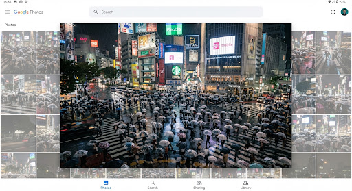

arrow_back
more_vert
person
AI Powered Wayfinder Match
Tokyo • March 2019
mail
Gmail-confirmed

place
info
Nearby in this moment
Adjacent frames
-4m
Approach
Active
Selected
+2m
Matcha
+6m
Lantern
+12m
Garden
share
Share
create_new_folder
Album
tune
Edit
star
Star
more_horiz
More
check_circle
Found It! Save & Star
How it works
← All cases
Script